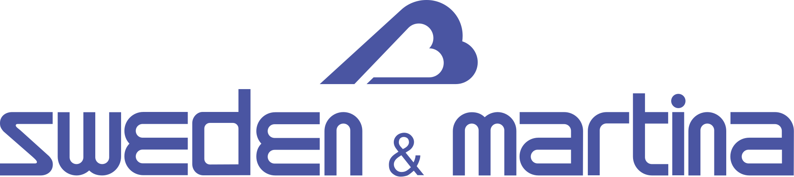

Jeste li znali da uz Dental Istria možete u jednom danu dobiti nove fiksne zube (implantate)? Potencijalno za samo 6 sati ili manje!

Zašto odabrati zubne implantate?
Zubni implantati su umjetni zubi koji se koriste za zamjenu nestalih ili oštećenih zuba. Sastoje se od malog vijčanog uređaja izrađenog od biokompatibilnih materijala i zubne krune. Uređaj se kirurški postavlja u čeljusnu kost, a krunica je pričvršćena kako bi se dobio zamjenski zub prirodnog izgleda. Oni su popularno, učinkovito i dugotrajno rješenje za obnavljanje oralnog zdravlja.
Moderni i vrhunski implantološki tretmani u našem stomatološkom centru osiguravaju dugotrajno i zajamčeno rješenje. Ponosni smo na visoku stopu uspješnosti liječenja implantologije, čak 99%.
Prednosti zubnih implantata:
- Trajno rješenje: Implantati se spajaju s čeljusnom kosti, nudeći stabilan i trajan temelj za zamjenske zube.
- Očuvanje čeljusti: Implantati stimuliraju čeljusnu kost, sprječavajući gubitak kostiju i održavajući strukturu lica.
- Prirodni izgled i osjećaj: Implantati su jednaki Vašim prirodnim zubima u boji, obliku i konturi.
- Poboljšana funkcionalnost: Implantati poboljšavaju žvakanje hrane i funkciju govora, uklanjajući klizanje proteze i nelagodu.
Contact us today to schedule your FREEÂ consultation and learn more about this transformative dental solution.
Zašto odabrati postupak implantacije u klinici Dental Fiume by dr. Vladimir Kljajo?
- 99% uspjeha sa našim implantatima
- Implantat postavljen istog dana!
- Međunarodno certificirani Implantolozi pod vodstvom Dr. Vladimira Kljaje
- Najkvalitetniji Implantati: Sweden & Martina, Bego i SGS (doživotno jamstvo uz redovite godišnje preglede)
- Dobro smo uspostavljena stomatološka klinika s više od 20 godina tradicije i generacijama zadovoljnih pacijenata
REZERVIRAJTE BESPLATAN PREGLED